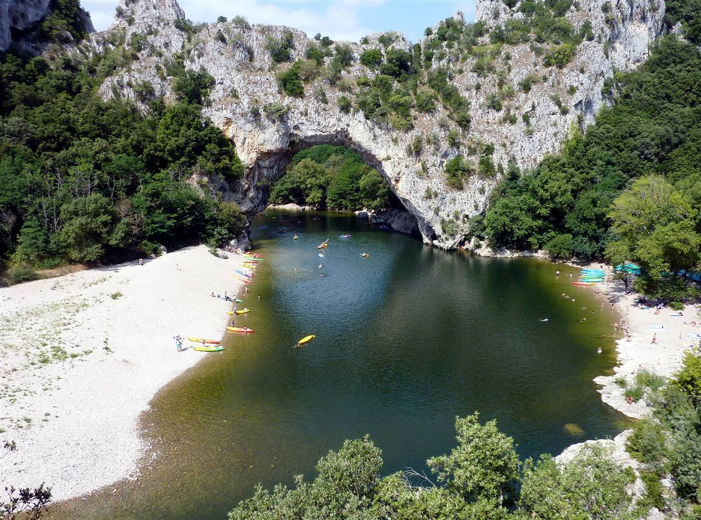

Drôme-Ardèche : notre terrain de jeu bon vivant
Bon Vivre est née ici, entre la Drôme et l'Ardèche, dans cette vallée du Rhône où les vignes descendent presque jusqu'aux rivières. On ne pouvait pas parler de notre marque sans parler de ce territoire : c'est lui qui nous a donné le ton, l'envie de simplicité et ce goût pour les journées qui n'en finissent pas. Voici un petit tour de ce qui nous inspire, saison après saison.
Les gorges et rivières de l'Ardèche
Il y a quelque chose d'irremplaçable dans une descente en canoë au fil de l'eau, entre les falaises qui se resserrent puis s'ouvrent sur un ciel immense. On pagaie doucement, on s'arrête sur un banc de galets pour se baigner, on remonte se sécher au soleil sur une pierre plate. Pas besoin de grand-chose d'autre : un maillot, des amis, et cette lumière particulière qui rebondit sur l'eau claire des rivières ardéchoises. C'est ce genre de journée qu'on a en tête quand on pense à ce que "bon vivre" veut dire.

Marchés provençaux et paysages de la Drôme
De l'autre côté du Rhône, la Drôme déroule ses paysages de collines, de champs et de vergers, avec cette lumière du sud qui donne envie de ralentir. Le samedi matin, les marchés provençaux prennent leurs quartiers sur les places de village : étals d'olives, de fromages de chèvre, de fruits de saison, discussions qui s'éternisent entre les cageots. On y retrouve une certaine idée de la convivialité, celle qui ne se presse jamais et qui fait de chaque course une occasion de discuter avec les producteurs.
Ici, on ne vit pas plus vite qu'ailleurs, on vit juste un peu mieux : un verre à la main, le soleil qui descend, et personne qui regarde sa montre.
Barbecue et apéro au coucher du soleil
S'il y a un rituel qui résume bien la région, c'est celui de l'apéro tiré en longueur sur une terrasse, pendant que le barbecue prend tranquillement sa place au centre de la soirée. On sort les grilles, quelqu'un s'occupe des braises, les autres s'installent avec un verre de vin local, et la conversation dure jusqu'à ce que le ciel passe du orange au bleu nuit. C'est exactement pour ces moments-là qu'on a pensé notre Tablier BBQ (30 €) : une pièce simple, pratique, faite pour ceux qui aiment prendre le temps de bien griller sans se soucier de tacher leur t-shirt.
Les saisons, entre montagne et vignes
Ce qui rend la Drôme-Ardèche si attachante, c'est aussi ce contraste des saisons. L'été, tout se passe dehors, autour d'un barbecue ou d'une rivière. Mais dès que l'automne arrive et que les sommets voisins se couvrent de neige, on change complètement de rythme : direction la montagne pour une journée au grand air, puis retour au chalet pour une raclette entre copains, quand le fromage fond et que les histoires de la journée se racontent autour de la table. Les soirées se rafraîchissent vite en altitude, et c'est là que notre sweat Trois Becs (50 €) trouve toute sa place : chaud, confortable, pensé pour ces fins de journée où on reste dehors un peu plus longtemps, emmitouflé, avant de rentrer se mettre à table.
Barbecues d'été, raclettes d'hiver, marchés du samedi et baignades en rivière : c'est ce va-et-vient entre les saisons qui façonne notre façon de vivre ici, et c'est cette façon de vivre qu'on essaie de mettre dans chacun de nos vêtements. Pour en savoir plus sur l'histoire et les valeurs de la marque, direction la page La Marque. Et si l'envie vous prend de vous équiper pour les soirées fraîches en montagne, jetez un œil à notre collection de sweats et vestes.